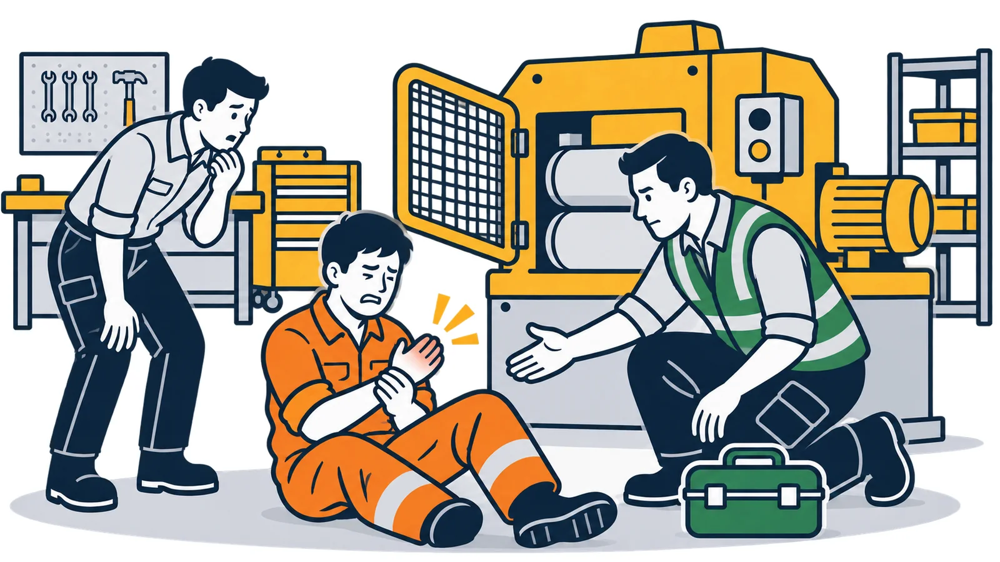
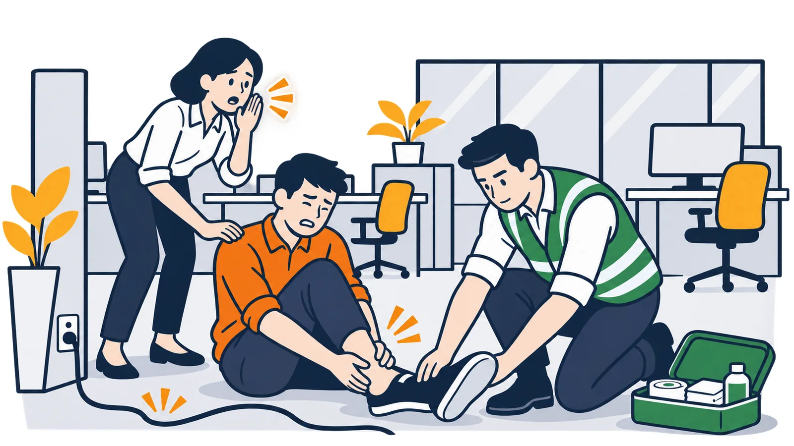
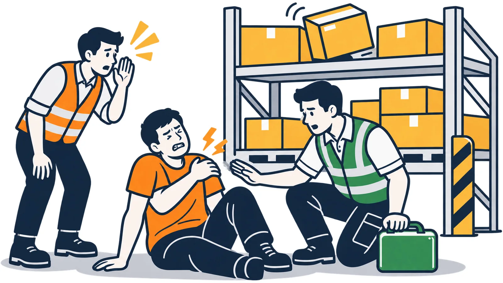
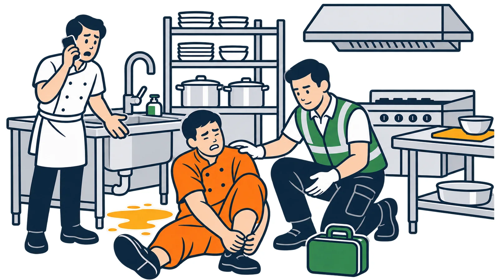
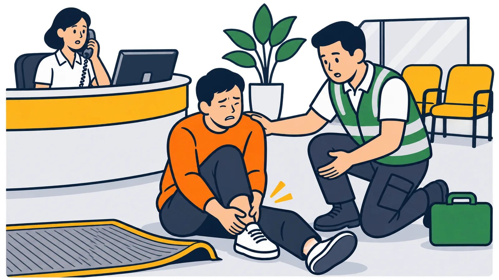

Scénarios d’accident simulé
Cas simples : 1 contexte, 1 danger identifiable, 1 victime, 1 ou plusieurs témoins, 1 SST. Les scénarios de certification (K) sont différents de ceux de la formation (F).
Rappel du Manuel : scénario écrit à l’avance, crédible, non dangereux pour l’apprenant, de préférence en lien avec l’activité des stagiaires ; l’épreuve 1 n’a pas pour support un risque spécifique. À adapter aux situations réelles du groupe avant la session.
Formation (évaluation formative)

F1 · Plaie de la main qui saigne abondamment
| Contexte | Atelier, machine à zone de pincement |
|---|---|
| Danger identifiable | Machine à rouleaux, protecteur ouvert, encore sous tension (danger persistant : pincement). |
| Victime et événement | Un opérateur se coince la main : une plaie de l’avant-bras saigne en flot continu. |
| Témoin(s) | 1 collègue présent, à proximité du téléphone. |
| Intervenant | 1 apprenant SST |
| Matériel | Gants à usage unique, compresses, téléphone, garrot de démonstration. |
| Attendus | Protéger (arrêt d’urgence, empêcher la remise en marche, écarter le témoin) · examiner · compression immédiate · faire alerter · allonger · surveiller ; garrot seulement si la compression est inefficace ou impossible. |
| Question de prévention | Comment éviter le pincement ? Qui prévenir de l’état du protecteur ? |
| Compétences · source | C2, C3, C4, C5 · Guide V5.01, Secourir 1 · tableaux 6 et 7 |

F2 · Chute et douleur à la cheville
| Contexte | Bureau, passage encombré |
|---|---|
| Danger identifiable | Câble qui traverse le passage (danger persistant : nouvelle chute possible). |
| Victime et événement | Une salariée trébuche sur le câble et se tient la cheville, sans pouvoir poser le pied. |
| Témoin(s) | 1 collègue, qui peut alerter. |
| Intervenant | 1 apprenant SST |
| Matériel | Téléphone, signalisation du passage. |
| Attendus | Protéger (sécuriser le câble ou le passage) · examiner · demander de ne pas mobiliser le pied · faire alerter · ne pas réaligner · surveiller. |
| Question de prévention | Comment supprimer le câble au sol ? À qui remonter la situation ? |
| Compétences · source | C2, C3, C4, C5 · Guide V5.01, Secourir 5 |

F3 · Douleur à l’épaule après chute d’objet
| Contexte | Entrepôt, rayonnage |
|---|---|
| Danger identifiable | Colis instable en hauteur au-dessus de la victime (danger persistant : nouvelle chute d’objet). |
| Victime et événement | Un colis tombe du rayonnage ; le salarié se tient l’épaule en grimaçant. |
| Témoin(s) | 1 collègue en gilet orange, qui alerte. |
| Intervenant | 1 apprenant SST |
| Matériel | Téléphone, balisage. |
| Attendus | Protéger (écarter les personnes de la zone sous le rayonnage, empêcher l’accès) · examiner · demander de ne pas mobiliser l’épaule · faire alerter · surveiller. |
| Question de prévention | Comment stocker pour que les colis ne tombent plus ? À qui le signaler ? |
| Compétences · source | C2, C3, C4, C5 · Guide V5.01, Secourir 5 |

F4 · Brûlure thermique
| Contexte | Cuisine collective, sol glissant |
|---|---|
| Danger identifiable | Liquide chaud renversé sur un sol glissant (danger persistant : glissade et nouvelle brûlure). |
| Victime et événement | Un agent renverse un liquide chaud : brûlure de la jambe, douleur vive ; il est assis au sol. |
| Témoin(s) | 1 collègue au téléphone, un point d’eau à proximité. |
| Intervenant | 1 apprenant SST |
| Matériel | Point d’eau, téléphone, chronomètre. |
| Attendus | Protéger (balisage, éviter la glissade) · examiner · refroidir à l’eau courante tempérée (au moins 10 min, idéalement 20) · retirer ce qui n’adhère pas · apprécier la gravité · faire alerter si brûlure grave. |
| Question de prévention | Comment éviter le renversement et le sol glissant ? |
| Compétences · source | C2, C3, C4, C5 · Guide V5.01, Secourir 4 · tableau 13 |
Certification (épreuve 1)

K1 · Victime qui ne répond pas mais respire
| Contexte | Chantier léger, pied d’une plateforme |
|---|---|
| Danger identifiable | Plateforme et zone de circulation, barrière en place (danger résiduel à identifier). |
| Victime et événement | Un ouvrier s’allonge au sol après un malaise vu du témoin, sans chute ; il ne répond pas mais respire normalement. |
| Témoin(s) | 1 collègue en gilet jaune, au téléphone. |
| Intervenant | 1 apprenant SST |
| Matériel | Téléphone, mannequin pour la PLS. |
| Attendus | Identifier les dangers résiduels · examiner (réponse, respiration) · PLS · faire alerter par le témoin · surveiller la respiration · transmettre les informations aux secours. |
| Question de prévention | Quels dangers résiduels sur la zone ? À qui les signaler ? |
| Compétences · source | C2, C3, C4, C5, C7, C8 · Guide V5.01, Secourir 7 · tableau 19 |

K2 · Chute et douleur à la cheville
| Contexte | Accueil, tapis dont le bord est soulevé |
|---|---|
| Danger identifiable | Bord du tapis soulevé dans le passage (danger persistant). |
| Victime et événement | Une personne trébuche sur le bord du tapis ; elle se tient la cheville. |
| Témoin(s) | 1 collègue de l’accueil, au téléphone. |
| Intervenant | 1 apprenant SST |
| Matériel | Téléphone. |
| Attendus | Repérer le bord du tapis et sécuriser · examiner · demander de ne pas mobiliser · mobiliser l’aide du témoin pour alerter · surveiller. |
| Question de prévention | Comment corriger le tapis ? À qui remonter l’information ? |
| Compétences · source | C2, C3, C4, C5, C7, C8 · Guide V5.01, Secourir 5 |

K3 · Malaise au bord d’un quai
| Contexte | Quai de chargement sans garde-corps |
|---|---|
| Danger identifiable | Bord du quai sans garde-corps (danger de chute). |
| Victime et événement | Un opérateur assis au bord du quai, tête baissée, se plaint d’un malaise. |
| Témoin(s) | 1 collègue en gilet orange, au téléphone. |
| Intervenant | 1 apprenant SST |
| Matériel | Téléphone. |
| Attendus | Évaluer le risque de chute avant de s’approcher · protéger · observer les signes · mettre au repos · faire alerter · surveiller. |
| Question de prévention | Quelle protection pour le bord du quai ? À qui remonter ? |
| Compétences · source | C2, C3, C4, C5, C7, C8 · Guide V5.01, Secourir 3 |

K4 · Brûlure chimique
| Contexte | Laboratoire, récipient renversé |
|---|---|
| Danger identifiable | Produit renversé au sol, à distance, à identifier (danger persistant). |
| Victime et événement | Un opérateur reçoit une projection de produit sur l’avant-bras : douleur, peau irritée. |
| Témoin(s) | 1 collègue en blouse, à proximité de la douche de sécurité. |
| Intervenant | 1 apprenant SST |
| Matériel | Douche de sécurité ou point d’eau, gants, téléphone. |
| Attendus | Identifier le produit à distance · se protéger · rincer à l’eau courante selon la conduite du Guide · faire alerter · transmettre le nom du produit aux secours · surveiller. |
| Question de prévention | Comment éviter la projection ? Où ranger le produit ? |
| Compétences · source | C2, C3, C4, C5, C7, C8 · Guide V5.01, Secourir 4 · tableau 14 |
Sources : Manuel du formateur SST 2024 (utilisation des grilles de certification) ; Guide des données techniques V5.01/2024.